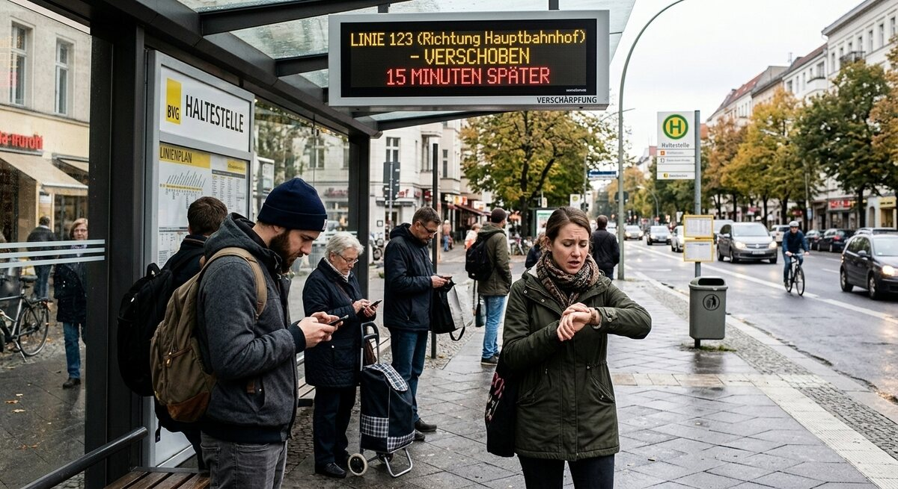

Teil 2 · Bild und Erfahrung
Karte 018
Verspätung im öffentlichen Verkehr
Ausführliches Übungsmaterial zur Vorder- und Rückseite der Karte.

Ihre Aufgabe
- die Situation
- wie die Menschen sich fühlen könnten
- was man bei Verspätungen machen kann
- ob Sie oft mit Bus und Bahn fahren
- was im öffentlichen Verkehr besser sein könnte
Interaktives Sprechtraining
Mit ChatGPT sprechen üben
Öffne ChatGPT, starte dort zuerst den Sprachmodus (Voice Mode) und füge anschließend den kopierten Übungsprompt in diesen Chat ein.
- Tippe auf den Button. Der Übungsprompt wird kopiert und ChatGPT wird geöffnet. Melde dich bei Bedarf in deinem ChatGPT-Konto an.
- Starte in ChatGPT zuerst den Sprachmodus (Voice Mode).
- Füge den bereits kopierten Prompt in den Chat des Sprachmodus (Voice Mode) ein und sende ihn ab.
- Beginne anschließend die Sprechübung.
- Wenn du die Übung beenden und Feedback bekommen möchtest, sage:
Die Übung ist beendet. Bitte gib mir jetzt Feedback.
Prompt anzeigen oder manuell kopieren
ChatGPT ist ein externer Dienst. Für den Sprachmodus (Voice Mode) musst du dich möglicherweise bei deinem ChatGPT-Konto anmelden und den Zugriff auf das Mikrofon erlauben. Verfügbare Funktionen hängen von deinem Gerät und Konto ab. Die Übung ersetzt keine offizielle Prüfungsbewertung.
Nützliche Satzanfänge
- Hier sieht man …
- Die Leute warten auf …
- Sie sind vielleicht …
- Wenn ein Zug zu spät kommt, dann …
- Meiner Meinung nach …
Modellantwort anhören
Höre zuerst aufmerksam zu. Sprich danach nicht einfach alles nach, sondern bearbeite die Aufgabe mit eigenen Informationen.
Modellantwort
Auf dem Bild sieht man mehrere Menschen, die auf Bus oder Bahn warten. Sie stehen an einer Haltestelle oder auf einem Bahnsteig. Auf der Anzeige gibt es wahrscheinlich eine Verspätung, denn eine Person schaut ungeduldig auf die Uhr. Ich glaube, dass manche Menschen gestresst sind, weil sie zur Arbeit, zur Schule oder zu einem Termin müssen.
Wenn öffentliche Verkehrsmittel zu spät kommen, ist das im Alltag oft ein Problem. Dann muss man manchmal schnell eine andere Verbindung suchen oder jemandem schreiben, dass man später kommt. Ich fahre selbst oft mit Bus und Bahn, weil es praktisch und meistens günstiger als ein Auto ist. Besser könnte für mich vor allem die Pünktlichkeit sein. Gute Informationen sind auch wichtig, damit man ruhig bleiben und umplanen kann.
Mögliche Prüferfragen und Antwortideen
-
Was machen Sie, wenn Sie einen Anschluss verpassen?
Antwortidee: Dann suche ich sofort eine andere Verbindung in der App oder am Automaten.
-
Nutzen Sie lieber Bus, Bahn oder Fahrrad?
Antwortidee: Meistens nutze ich die Bahn, aber kurze Wege fahre ich auch mit dem Fahrrad.
-
Ist der Verkehr in Ihrer Stadt gut organisiert?
Antwortidee: Im Großen und Ganzen ja, aber es gibt manchmal Probleme am Abend.
-
Warum ist Pünktlichkeit in Deutschland oft so wichtig?
Antwortidee: Weil viele Menschen feste Termine haben und sich auf Zeiten verlassen.
Wortschatz
| Deutsch | Englisch |
|---|---|
| die Haltestelle | stop |
| der Bahnsteig | platform |
| die Verspätung | delay |
| ungeduldig | impatient |
| die Verbindung | connection |
| den Anschluss verpassen | to miss the connection |
| pünktlich | on time |
| umplanen | to rearrange |
Schnelltraining
Erklären Sie in zwei Sätzen, was Sie tun, wenn Ihr Bus zu spät kommt.